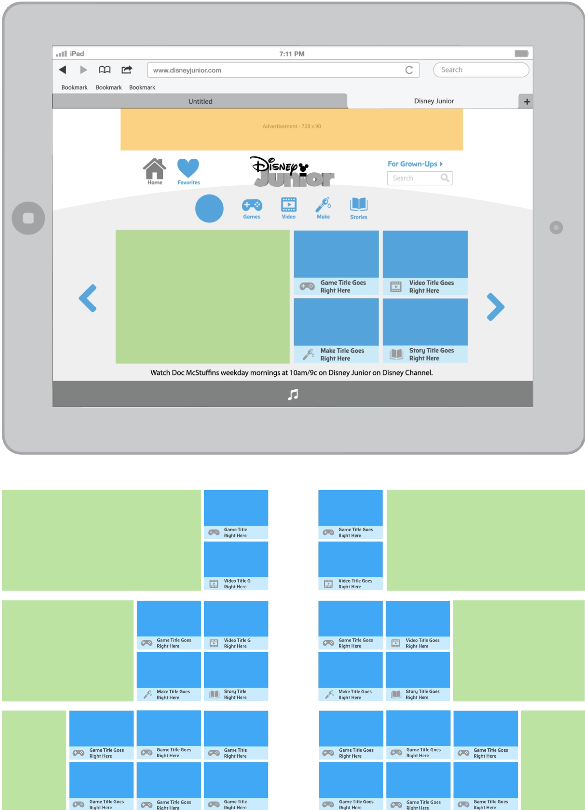
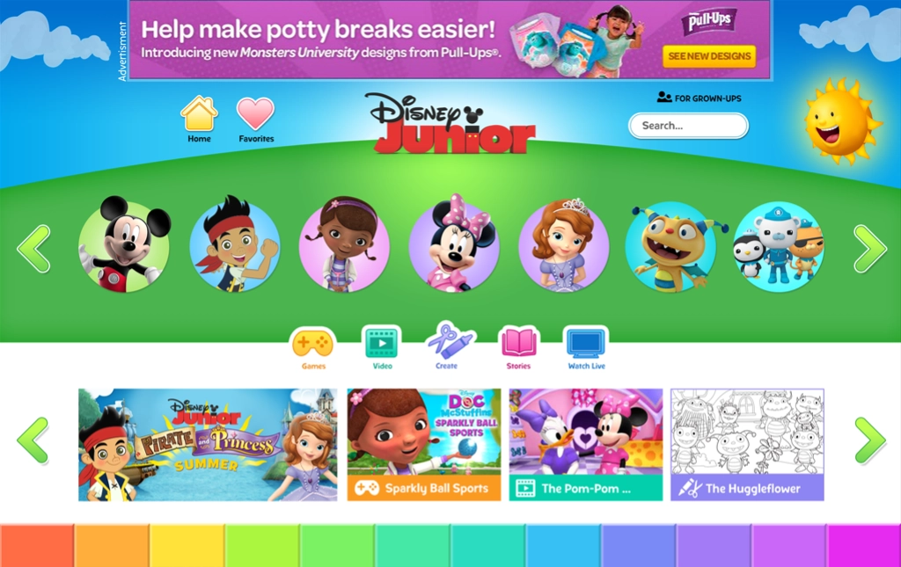
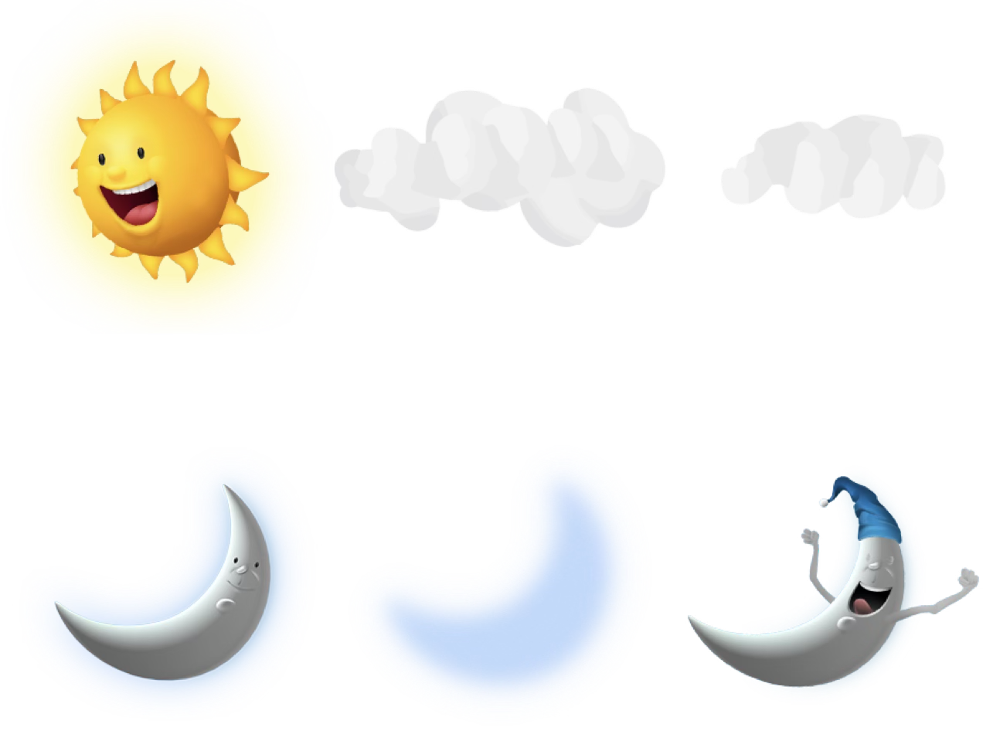

Disney Junior
I was one of two UX designers working with a visual design team to reimagine Disney Junior as a tablet-optimized and kid-friendly destination for 3 to 8 year olds.
I worked across IA, UX, interaction design, and user testing as we rapidly explored layouts, games, and activities designed for preschoolers and kindergarteners. As I became more interested in the fluidity and interactivity code could provide beyond wireframe animations, I gradually shifted from pure UI/UX into coding visual polish and began contributing directly to the codebase, learning jQuery and Sass in the process. The project became the start of my transition from designer into developer.
Designing for Simplicity
Many users couldn't read yet, making familiar conventions like labels and hover hints less effective. Interaction instead had to communicate through size, iconography, and motion: large hit areas, icon-based navigation, and continuous swiping.

Creating Flexible Templates
My UX partner and I designed a custom, flexible grid system that powered most of the site. It was an early version of the systems thinking that later shaped my approach to implementation in Star Wars and m:UX's component library.
As the timeline tightened, I began translating visual polish and interactions directly into code. What started as tinkering with prototypes became a new creative medium, giving me a way to build the interactions I'd previously struggled to communicate through static design tools.

Adding Playfulness
The homepage background changed with the actual time of day, from morning and afternoon through evening, night, and midnight, each with its own animation. Clouds drifted along during the day, and the moon was accompanied by shooting stars at night.
It was one of my earliest examples of a principle that has followed me throughout my career: details can make experiences come to life.

Takeaways
I learned to draw parallels between unfamiliar concepts and things I already understood. Code reviews became a form of critique; the box model became a new way of thinking about visual layering. I later used the same approach to move from software into hardware, finding parallels between Bluetooth protocols and API logic. When I eventually had a team of my own, I began using that approach with my team members, leverage familiar areas and experiences as context to bridge into unfamiliar territory. It became a valuable way to identify and reinforce potential in others.